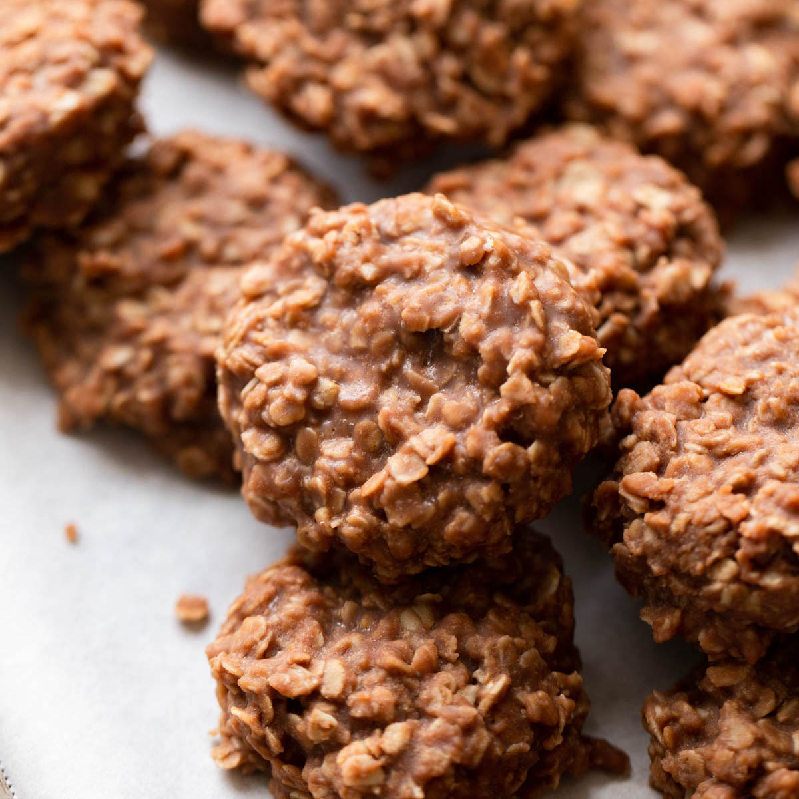

Classic No-Bake Cookes

Description
These Classic No-Bake Cookies only require a few simple ingredients and are incredibly easy to make. Loaded with peanut butter, oats, and cocoa powder, these cookies are perfect for an easy dessert!
Ingredients
- Butter
- Milk
- Granulated Sugar
- Unsweetened Cocoa Powder
- Peanut Butter
- Vanilla Extract
- Quick-Cooking Oats
Steps
- To start, line a couple of large baking sheets with parchment paper and set them aside
- Next, combine the sliced butter, granulated sugar, milk and cocoa powder in a large saucepan and place it over medium heat. One the butter is melted, bring the mixture to a rolling boil and allow it to boil for one minute.
- Now here's another important thing, set a timer for exactly 60 seconds once the mixture comes to a rolling boil.
- Once the timer goes off, remove it from the heat and stir in the peanut butter and vanilla extract until it's nice and smooth. Add the quick-cooking oats and stir them in until all of the oats are coated.
- Then, use a cookie scoop to scoop the mixture and drop cookies onto the prepared baking sheets.
- The cookies will be very soft at first, but will continue set up more as they cool. Usually taking 20-30 minutes to full set.